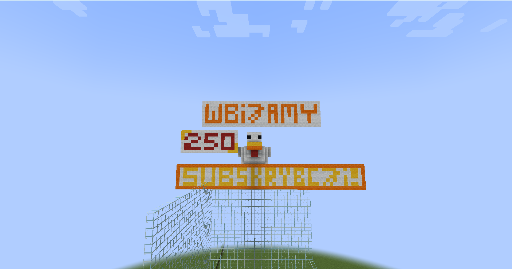

Kim jesteśmy?
Kokoszka #1 to Kajtek a Kokoszka #2 to Kacper 😎👍😉😊
Nasze filmy
Znajdziesz nas na YouTube!
YouTube 🙂Jak to się zaczęło?
Jeszcze w 2020 roku Kacper nienawidził Kajtka, ale to tak poprostu. W 2021 roku stworzyliśmy team nawet o tym nie wiedząc. Świetnie się bawiliśmy i było bardzo fajnie. Już w 2023 roku postanowiliśmy nazwać nasz team. Nazwaliśmy go TEAM KOKOSZKI, bo w końcu gdakamy na tych samych falach 👍. Sam kanał stworzyliśmy w wakacje 2025 roku. Kacper miał w tym doświadczenie ponieważ przez 2 lata prowadził kanał na YouTube. Okazało się że był to strzał w dziesiątkę! Nasz team trwa do dzisiaj 😁😄😄😃😄🙂
AKTUALNOŚCI
| Zdjęcie | Data | Aktualność |
|---|---|---|
 |
14/11/2026 | DOBIJAMY 500! |